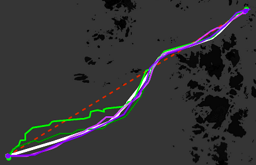

Preprocess trips
Filter trips, remove outlier durations, and resample irregular AIS observations onto a regular temporal grid.
IMGIN Framework Reframes Trajectory Imputation Problem as Image Reconstruction Task
Archimedes/Athena RC · University of the Aegean · Athena RC · Hellenic Mediterranean University
In this work, we propose IMGIN, a novel framework that reformulates trajectory imputation as an image reconstruction task. We introduce the notion of wave map, a spatiotemporal representation in which raw trajectory data is transformed into a structured multi-channel image, where temporal evolution is captured by image coordinates and spatial location is encoded by color. This representation enables the use of high-performance computer vision architectures to recover missing path segments. To the best of our knowledge, this is the first work to address the trajectory imputation problem using image reconstruction techniques. Preliminary evaluation on real-world maritime datasets demonstrates that IMGIN achieves accuracy comparable to a state-of-the-art method.
Filter trips, remove outlier durations, and resample irregular AIS observations onto a regular temporal grid.
Map positions to H3 cells and encode normalized centroids as RGB values.
Create N x N image tensors where grid position captures time and pixel color captures spatial state.
Use a masked U-Net reconstruction pipeline and map outputs back to H3 centroids and coordinates.

@inproceedings{btps2026,
title = {Trajectory Imputation Using Computer Vision Models},
author = {Betchavas, Panagiotis and Troupiotis-Kapeliaris, Alexandros and Patroumpas, Kostas and Spiliopoulos, Giannis and Skoutas, Dimitrios and Zissis, Dimitris and Bikakis, Nikos},
booktitle ={International Workshop on Multi-Sensor Trajectory Knowledge Discovery & Extraction (MuseKDE 2026)},
year = {2026}
}